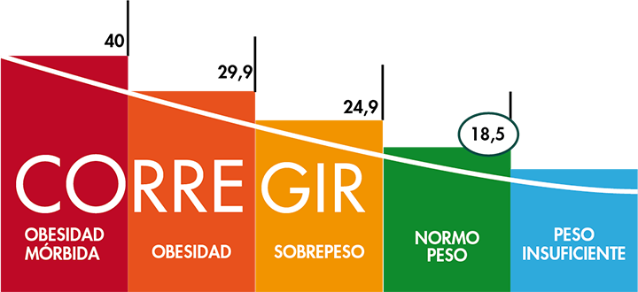

Definición: el índice de masa corporal (IMC) es un indicador simple de la relación entre el peso y la talla que se utiliza frecuentemente para identificar el sobrepeso y la obesidad en los adultos. Se calcula dividiendo el peso de una persona en kilos por el cuadrado de su talla en metros (kg/m²).
El inventor de la fórmula: el Índice de Masa Corporal (IMC) o Body Mass Index (BMI) fue ideado en 1835 por Adolphe Quetelet, por lo que también recibe el nombre de índice de Quetelet.
El sobrepeso y la obesidad se definen como una acumulación anormal o excesiva de grasa que puede ser perjudicial para la salud
Para mas informacion sobre obecidad y sobrepeso, consulta la en la pagina de la OMS
Obesidad y sobrepeso